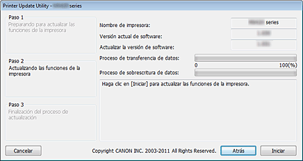

Entorno de funcionamiento para la Utilidad de actualización de impresora
-
Sistemas operativos objetivo
-
Windows
-
- Windows 8, Windows 7, Windows Vista y Windows XP
-
Mac OS
-
- Mac OS X v10.8, Mac OS X v10.7, Mac OS X v10.6 y Mac OS X v10.5.8
-
-
Requisitos
-
- Ordenador en el que está instalado el controlador de la impresora.
-
Si trabaja con Windows, abra la ventana Propiedades del controlador de la impresora, acceda a la pestaña Puertos y seleccione Habilitar compatibilidad bidireccional. Para obtener instrucciones sobre cómo abrir la ventana Propiedades, consulte el manual en pantalla que se entrega con la impresora.
-
- Impresora que está usando
-
- Cable USB
-
- Utilidad de actualización de impresora
 Importante
Importante
-
Compruebe si la actualización es necesaria
Puede verificar si la actualización es necesaria imprimiendo el patrón de comprobación de inyectores.
Compruebe la versión del software (firmware) "Ver. X.XXX" que se imprime en los resultados de impresión del patrón de comprobación de inyectores. Si la versión del firmware es anterior a la versión 2.000, es necesario actualizar el firmware.
Actualice conforme al "Procedimiento de actualización de la versión del firmware" que se explica a continuación.
 Nota
Nota
-
Para obtener instrucciones sobre cómo imprimir el patrón de comprobación de inyectores, consulte el manual en pantalla que se entrega con la impresora.
Procedimiento de actualización de la versión del firmware
-
Conecte el ordenador y la impresora mediante un cable USB.
Si la cámara se ha conectado con un cable LAN o un cable USB, desconecte esos cables.
En los modelos con ranuras para tarjeta, extraiga todas las tarjetas que pueda haber insertadas en las ranuras.
Nota
-
Asegúrese de que solo hay una impresora conectada al ordenador mediante un cable USB.
Importante
-
Si trabaja con Mac OS, asegúrese de que el equipo está configurado para no entrar en modo de suspensión.
-
-
Si trabaja con Windows, haga doble clic en
 (Printer Update.exe) para iniciar la utilidad de actualización.
(Printer Update.exe) para iniciar la utilidad de actualización.
Si trabaja con Mac OS, haga doble clic en
(Actualización de impresora) para iniciar la utilidad de actualización.
-
Compruebe el contenido del Paso 1 que se muestra en la Utilidad de actualización de impresora, encienda la impresora y haga clic en Siguiente.
Nota
-
Si aparece algún mensaje de error, las causas posibles son las siguientes:
-
Causa (1): El cable USB no está conectado.
Solución: Conecte el cable USB y vuelva a empezar desde el paso 1. -
Causa (2): El archivo de actualización descargado corresponde a una impresora distinta.
Solución: Descargue el archivo para la impresora que necesita actualizar y vuelva a empezar desde el paso 1.
-
-
-
Compruebe el contenido del Paso 2 que se muestra en la Utilidad de actualización de impresora, encienda la impresora y haga clic en Iniciar.
*En función del sistema operativo con el que esté trabajando, las ventanas que van apareciendo pueden ser algo distintas.
Nombre de impresora: Nombre de la impresora conectada al ordenador.
Versión actual de software: Versión del software de la impresora conectada.
Actualizar la versión de software: Versión del software a la que se va a actualizar la impresora esta vez.
Importante
-
No apague la impresora ni desconecte el cable USB hasta que la actualización haya finalizado. Si lo hace, podría producirse un error.
-
-
Si no es posible hacer clic en Iniciar, la actualización se ha intentado realizar en una impresora que no requiere sobrescritura del firmware. Vuelva a comprobar la Versión actual de software. Si no requiere actualización alguna, cancele la operación.
-
Durante la actualización, el indicador luminoso de error de la impresora parpadeará en color naranja.
-
Cuando aparezca la ventana Paso 3 en la Utilidad de actualización de impresora, compruebe el contenido del mensaje y haga clic en Salir.
Esto finaliza la actualización del firmware.
Cuando la actualización de la versión haya concluido, la impresora se apaga automáticamente. Para usar la impresora primero debe desconectar el cable de alimentación, volverlo a conectar y encender la impresora.
Si está utilizando la impresora con una conexión LAN, desconecte el cable USB primero y luego conecte el cable LAN.
Importante
-
Si va a usar la impresora con una conexión LAN, restablezca la configuración habitual de la impresora a conexión LAN.
Cuando se trabaja con Windows, para restablecer el valor del ajuste de conexión LAN, primero es necesario seleccionar "Impresora Canon XXX" con el nombre de puerto "CNBJNPxxxxxxxxxx".
Para obtener las instrucciones de ajuste, consulte el manual en pantalla que se entrega con la impresora.
Nota
-
Si se apaga la unidad durante la actualización, dicha actualización no se completará correctamente.
Si la impresora no funciona con normalidad, ni siquiera después de apagarla y volver a encenderla, la actualización podría no haberse realizado correctamente.
-
Nota
Causas de error y soluciones
Si se detecta un error durante el funcionamiento de la Utilidad de actualización de impresora, aparecerá un mensaje de error.
Si aparece algún mensaje de error, realice la operación descrita en las instrucciones del mensaje.
En la tabla siguiente encontrará las causas y soluciones de los principales mensajes de error que pueden aparecer.
|
Mensaje |
Causa |
Solución |
|---|---|---|
Si trabaja con Windows o con Mac OS |
||
|
Este programa no es compatible con el sistema operativo que está utilizando. |
Se ha intentado ejecutar la Utilidad de actualización de impresora en un sistema operativo no compatible con la utilidad. |
Ejecute la Utilidad de actualización de impresora en un sistema operativo compatible. |
|
Hay más de una impresora conectada. Asegúrese de que solo hay una impresora conectada mediante un cable USB y, a continuación, reinicie la utilidad. |
Hay dos o más impresoras conectadas al ordenador que necesitan ser actualizadas. |
Conecte solo una impresora. |
|
El estado de la impresora es incorrecto. Encienda de nuevo la impresora y, a continuación, reinicie la utilidad. |
La impresora no ha podido ejecutar la actualización. |
Vuelva a encender la impresora. |
|
Se ha producido un error durante la actualización de funciones de la impresora. Puesto que la actualización ha fallado, no se puede utilizar la impresora en su estado actual. Encienda de nuevo la impresora y, a continuación, asegúrese de reiniciar la utilidad. |
La impresora se ha apagado o el cable USB se ha desconectado durante el proceso de actualización. |
Pulse el botón OK para terminar la Utilidad de actualización de impresora. Apague la impresora, espere unos segundos y vuelva a encenderla. Si la impresora no se inicia normalmente o si la actualización no se puede ejecutar, hay que reparar la impresora. |
Si trabaja con Windows |
||
|
No se ha encontrado la impresora. Compruebe las opciones siguientes y, a continuación, reinicie la utilidad:
|
|
|
|
Si trabaja con Mac OS |
||
|
Mac OS X Classic se está ejecutando. |
Se ha intentado ejecutar la Utilidad de actualización de impresora mientras el SO Classic se estaba ejecutando en Mac OS X. |
Detenga el SO Classic y ejecute la Utilidad de actualización de impresora desde Mac OS X. |
|
No se ha encontrado la impresora. Compruebe las opciones siguientes y, a continuación, reinicie la utilidad:
|
|
|